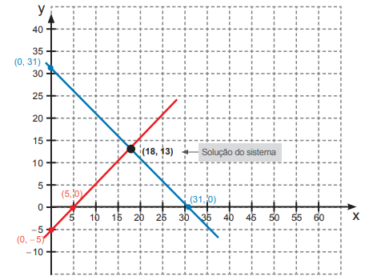

192
CAPÍTULO 2 - Sistemas de equações
Reinaldo Rosa/Acervo da Editora
Sistemas de equações do 1.º grau com duas incógnitas
1.Troque ideias com um colega e apresentem uma solução para o problema dado. Expliquem como vocês pensaram na solução.Para resolver esse problema, podemos usar equações.
Vamos representar por x a quantidade de meninas da turma e por y a quantidade de meninos. A partir das informações dadas no problema, podemos montar duas equações. Observe:
As duas equações que representam a situação do problema formam um sistema de equações. A solução desse sistema é um par ordenado que seja solução de ambas as equações simultaneamente.
Vamos estudar dois métodos, que são mais usuais, que nos permite resolver um sistema: o método da substituição e o método da adição.
193
Método da substituição
Vamos retomar a situação apresentada anteriormente e calcular a quantidade de meninas e meninos da turma. Temos o seguinte sistema:
O método da substituição consiste em isolarmos uma das incógnitas em uma das equações e substituirmos o seu valor na outra. No caso do sistema que montamos, note que na segunda equação já temos a incógnita x isolada. Acompanhe a resolução:
x + y = 36
Vamos substituir x por 2y.
2y + y = 36
3y = 36
y = 12
Número de meninos na turma.
Agora, vamos substituir o valor de y na equação x = 2y para calcular a quantidade de meninas.
x = 2y
x = 2 ∙ 12
x = 24
Número de meninas na turma.
Logo, nessa turma há 12 meninos e 24 meninas.
Acompanhe outras situações em que utilizaremos o método da substituição para resolver o sistema.
Situação 1
A soma de dois números naturais é igual a 28. Sabendo que a diferença entre eles é igual a 4, calcule quais são esses números.
Vamos representar o primeiro número por x e o segundo por y. Temos o seguinte sistema:
Vamos isolar uma das incógnitas em uma das equações:
194
Como isolamos x na segunda equação, iremos realizar a substituição na primeira, observe:
x + y = 28
4 + y + y = 28
2y = 28 - 4
2y = 24
y =
y = 12
Primeiro número.
Agora, vamos calcular o outro número:
x = 4 + y
x = 4 + 12
x = 16
Segundo número.
Portanto, os dois números naturais são 12 e 16.
Situação 2
Em uma loja, há motos e carros, sendo um total de 40 veículos e 136 rodas. Quantas motos e quantos carros há nessa loja?
Vamos representar por x a quantidade total de carros e por y a quantidade total de motos. Como na loja há 40 veículos, podemos escrever a primeira equação com essas informações: x + y = 40.
Sabemos que o total de rodas é igual a 136. Como um carro possui 4 rodas e uma moto 2 rodas, com essas informações podemos escrever a segunda equação: 4x + 2y = 136.
Teremos então um sistema de equações do 1.º grau com duas equações, o qual vamos resolver.
Reinaldo Rosa/Acervo da Editora
195
Isolamos a incógnita x na primeira equação e agora vamos substituí-la na segunda:
4x + 2y = 136
4(40 - y) + 2y = 136
160 - 4y + 2y = 136
-2y = 136 - 160
-2y ∙ (- 1) = -24 ∙ (-1)
2y = 24
y = 12
Número de motos.
Agora, vamos calcular a quantidade de carros:
x = 40 - y
x = 40 - 12
x = 28
Número de carros.
Portanto, nesta loja há 28 carros e 12 motos.

2.Em um quintal, há galinhas e coelhos, perfazendo um total de 18 animais e 56 pés. Quantos coelhos e quantas galinhas há no quintal?
3.A soma das idades de Júlia e Débora é 48 anos. Sabendo que a idade de Júlia menos 2 anos é igual a idade de Débora mais 6 anos, calcule as idades das duas.
4.Deseja-se cortar um pedaço de madeira de 150 cm em dois pedaços de tal maneira que um pedaço tenha 36 cm a mais que o outro. Quais serão as medidas dos pedaços de madeira após serem cortados?
a)
6.Tenho 50 cédulas, sendo algumas de 10 reais e outras de 5 reais, num total de 405 reais. Quantas são as cédulas de cada valor?
7.A soma entre dois números é 40 e a diferença entre eles é 6. Quais são esses números?
196
Método da adição
Luiz e Renato são irmãos. A soma de suas idades é igual a 31 anos e a diferença entre elas é igual a 5 anos. Quantos anos eles têm?
Para resolver esse problema, vamos montar um sistema de equações do 1.º grau com duas incógnitas. Vamos representar a idade de Luiz por x e a idade de Renato por y.
Note no sistema que as equações apresentam termos opostos: y e –y.
Por isso, vamos adicionar membro a membro as equações, obtendo uma equação com apenas uma incógnita.
Idade de Luiz.
A seguir, substituímos x por 18 em uma das equações do sistema:
x + y = 31
18 + y = 31
y = 13
Idade de Renato.
Portanto, Luiz tem 18 anos e Renato, 13 anos.
Observe, a seguir, a representação gráfica desse sistema com a solução.
Algumas soluções da equação x + y = 31:
|
x |
y |
|
0 |
31 |
|
31 |
0 |
197
Algumas soluções da equação x - y = 5:
|
x |
y |
|
0 |
-5 |
|
5 |
0 |

No gráfico, podemos observar que o par ordenado (18,13) representa a solução desse sistema.
Acompanhe outras situações em que utilizaremos o método da adição para resolver o sistema.
Situação 1
Michele foi a uma papelaria comprar canetas e lápis. Se ela comprar 4 canetas e 5 lápis, irá gastar R$ 22,00. Caso ela resolva comprar 3 canetas e 5 lápis, gastará R$ 19,00. Qual é o preço de cada caneta e cada lápis?
Vamos representar o preço de uma caneta por x e o preço de um lápis por y. De acordo com as informações dadas, temos o seguinte sistema:
Note que nesse sistema não temos termos opostos. Dessa forma, vamos multiplicar uma das equações por (-1) para que tenhamos termos opostos.
198
Adicionando membro a membro, temos:
4x + 5y = 22
-3x - 5y = -19
x + 0y = 3
x = 3
Preço de uma caneta.
Substituindo o valor de x em uma das equações, temos:
4x + 5y = 22
4 ∙ 3 + 5y = 22
12 + 5y = 22
5y = 22 - 12
5y = 10
y = 2
Preço de um lápis.
O preço de uma caneta é R$ 3,00 e o de um lápis, R$ 2,00.
Situação 2
Vamos agora resolver outro sistema utilizando o método da adição.
Note que nesse sistema não temos termos que são opostos, dessa forma vamos multiplicar ambas as equações por números que sejam convenientes para que possamos obter termos opostos.

Adicionando membro a membro, temos:
9x - 15y = -27
19x = 38
10x + 15y = 65
x = 2
19x + 0y = 38
Substituindo o valor de x em uma das equações, temos:
3x - 5y = -9
3 ∙ 2 - 5y = -9
-5y = -9 - 6
5y = 15
y = 3
Logo, o par ordenado (2, 3) é solução do sistema.
199
Observe, a seguir, como podemos representar graficamente a solução desse sistema.
1.º Devemos determinar pelo menos duas soluções de cada equação que compõe esse sistema.

2.º Para cada equação, traçamos a reta que passa pelos pontos correspondentes aos pares ordenados.
Algumas soluções da equação x + y = 40:
|
x |
y |
|
0 |
40 |
|
40 |
0 |
Algumas soluções da equação 4x + 2y = 136:
|
x |
y |
|
0 |
68 |
|
34 |
0 |
No gráfico, podemos observar que o par ordenado (28,12) representa a solução desse sistema.
200
2.Calcule dois números em que o primeiro mais o dobro do segundo número é igual a 30, e o segundo número mais o triplo do primeiro é igual a 35.
3.Em um seminário, estão participando pessoas de duas nacionalidades diferentes. Entre brasileiros e chilenos, há um total de 132 pessoas. Sabendo que a quantidade de brasileiros é igual ao quíntuplo da quantidade de chilenos, calcule quantas pessoas de cada nacionalidade participam desse seminário.
4.No caderno, resolva os sistemas a seguir pelo método da adição:
5.Em uma fábrica de fitas, foram produzidas 4 200 metros de fitas, entre amarelas e vermelhas. As peças de fitas amarelas têm 20 m e as de fitas vermelhas, 30 m. Quantas peças de cada cor foram produzidas se, ao todo, a fábrica produziu 180 peças?
6.Para um show, foram vendidos 240 ingressos. Se a quantidade de mulheres que compraram ingressos corresponde a da quantidade de homens, quantas mulheres e homens irão a esse show?
7.Em seu caderno, elabore uma situação-problema na qual seja necessário a sua representação por meio de um sistema de equações do 1.° grau com duas incognitas.